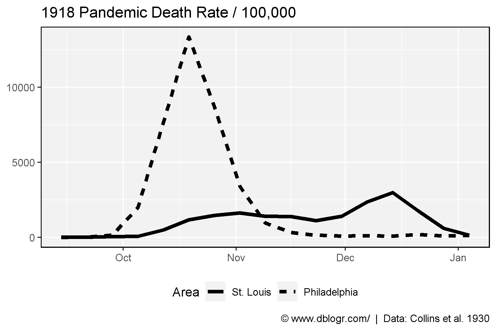
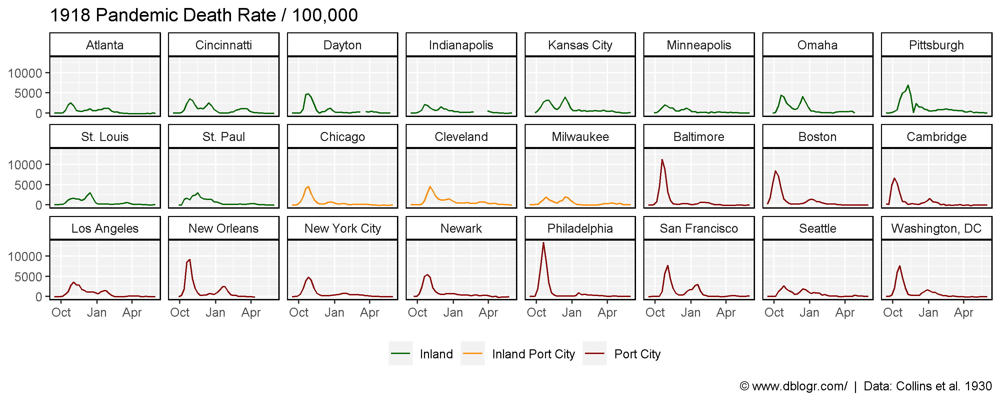
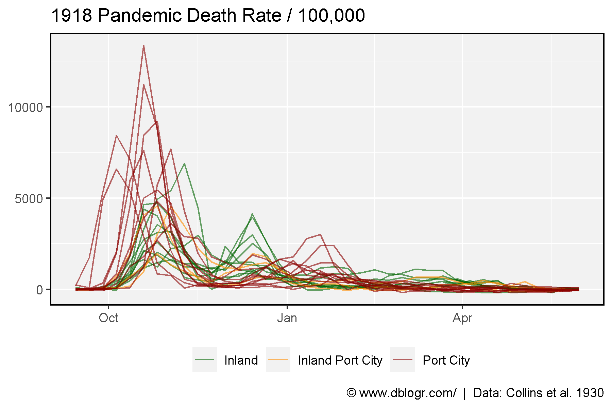
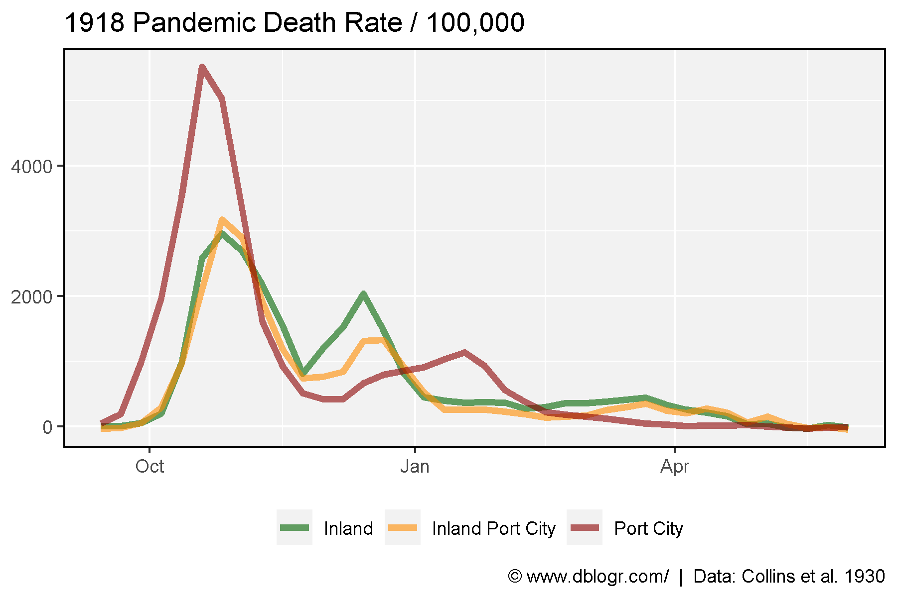

Hatchett, R.J., Mecher, C.E. & Lipsitch, M., (2007) Public health interventions and epidemic intensity during the 1918 influenza pandemic. Proceedings of the National Academy of Sciences. 104(18): 7582-7587.
https://www.pnas.org/content/104/18/7582?__ac_lkid=f639-efd2-f4de-3e717151efc501
# devtools::install_github("derekmichaelwright/agData")
library(agData) # Loads: tidyverse, ggpubr, ggbeeswarm, ggrepel
library(readxl)
# Prep data
yy <- read.csv("city_info.csv") %>% arrange(Type, Area)
dd <- read_xls("pnas_0610941104_10941Table11.xls", range = "A2:AM27", col_names = F)[-2,] %>%
t() %>% as.data.frame()
colnames(dd) <- dd[1,]
dd <- dd %>% slice(-1) %>%
mutate(City = as.Date(as.numeric(City), origin = "1899-12-30")) %>%
gather(Area, Value, 2:ncol(.)) %>%
mutate(Value = as.numeric(Value)) %>%
rename(Date = City) %>%
left_join(yy, "Area") %>%
mutate(Area = factor(Area, levels = yy$Area))# Prep data
xx <- dd %>% filter(Date < "1919-01-11")
xx %>%
group_by(Area) %>%
summarise(Sum = sum(Value, na.rm = T)) %>%
arrange(Sum)## # A tibble: 24 x 2
## Area Sum
## <fct> <dbl>
## 1 Minneapolis 13452
## 2 Atlanta 13506
## 3 Indianapolis 14117
## 4 Milwaukee 14976
## 5 St. Louis 18173
## 6 Seattle 18208
## 7 Chicago 19018
## 8 New York City 20333
## 9 St. Paul 20695
## 10 Dayton 21072
## # ... with 14 more rowsxx <- xx %>% filter(Area %in% c("Philadelphia", "St. Louis"))
# Plot
mp <- ggplot(xx, aes(x = Date, y = Value, lty = Area)) +
geom_line(size = 1.5) +
theme_agData(legend.position = "bottom") +
labs(title = "1918 Pandemic Death Rate / 100,000", y = NULL, x = NULL,
caption = "\xa9 www.dblogr.com/ | Data: Collins et al. 1930")
ggsave("spanish_flu_01.png", mp, width = 6, height = 4)
# Prep data
colors <- c("darkgreen","darkorange","darkred")
# Plot
mp <- ggplot(dd, aes(x = Date, y = Value, color = Type)) +
geom_line() +
facet_wrap(Area ~ ., nrow = 3) +
scale_color_manual(name = NULL, values = colors) +
theme_agData(legend.position = "bottom") +
labs(title = "1918 Pandemic Death Rate / 100,000", y = NULL, x = NULL,
caption = "\xa9 www.dblogr.com/ | Data: Collins et al. 1930")
ggsave("spanish_flu_02.png", mp, width = 10, height = 4)
# Plot
mp <- ggplot(dd, aes(x = Date, y = Value, color = Type, group = Area)) +
geom_line(alpha = 0.6) +
scale_color_manual(name = NULL, values = colors) +
theme_agData(legend.position = "bottom") +
labs(title = "1918 Pandemic Death Rate / 100,000", y = NULL, x = NULL,
caption = "\xa9 www.dblogr.com/ | Data: Collins et al. 1930")
ggsave("spanish_flu_03.png", mp, width = 6, height = 4)
# Prep data
xx <- dd %>% group_by(Date, Type) %>%
summarise(Value = mean(Value, na.rm = T))
# Plot
mp <- ggplot(xx, aes(x = Date, y = Value, color = Type)) +
geom_line(size = 1.5, alpha = 0.6) +
scale_color_manual(name = NULL, values = colors) +
theme_agData(legend.position = "bottom") +
labs(title = "1918 Pandemic Death Rate / 100,000", y = NULL, x = NULL,
caption = "\xa9 www.dblogr.com/ | Data: Collins et al. 1930")
ggsave("spanish_flu_04.png", mp, width = 6, height = 4)
© Derek Michael Wright 2020 www.dblogr.com/